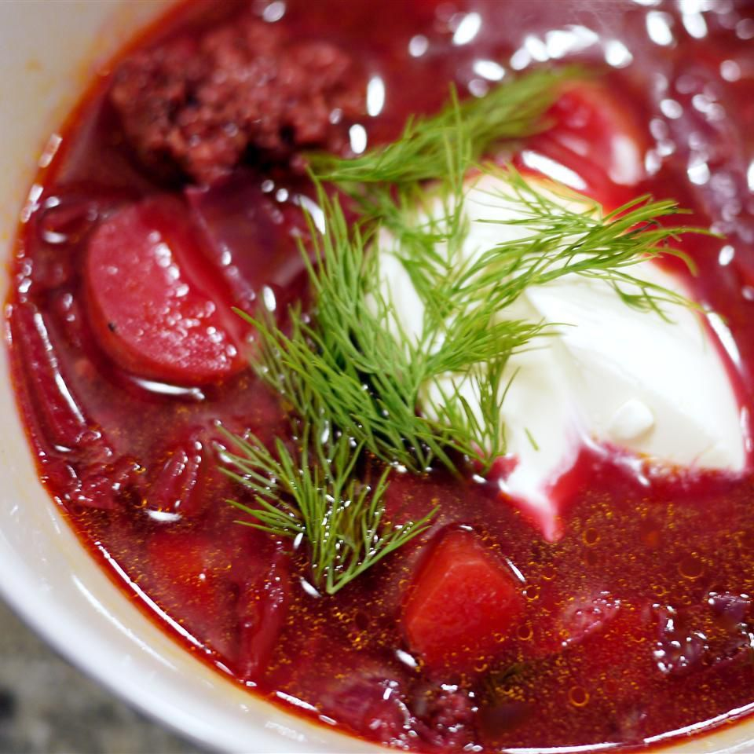

Borscht

Description
Borscht is a classic beet soup that's so comforting and delicious. This
recipe comes from my Ukrainian friend's mother, who taught me how to make
it.
Ingredients
Borscht is a sour soup that is traditionally made with meat stock and
boiled vegetables. The Ukrainian version, which features beets, is perhaps
the most well known type — but varieties of borscht can be found
throughout Central and Eastern Europe and Northern Asia.
-
Sausage: This Ukrainian borscht recipe starts with a pound of pork
sausage.
-
Vegetables: You’ll need beets, carrots, baking potatoes, cabbage, and an
onion.
-
Canned tomatoes: Use drained diced tomatoes and canned tomato paste.
- Vegetable oil: Cook the onion in oil.
-
Water: You’ll need almost nine cups of water for this big-batch soup.
- Garlic: Three cloves of garlic add bold flavor.
- Sugar: A teaspoon of white sugar lends subtle sweetness.
- Seasonings: Season the borscht with salt and pepper to taste.
- Sour cream: Top the borscht with sour cream.
- Fresh herbs: Garnish the soup with fresh parsley or dill.
Steps
- Cook the sausage and set aside.
-
Boil water, add the sausage, then add the vegetables and diced tomatoes.
-
Cook the onion, stir in the tomato paste, and thin with water. Transfer
to the pot.
-
Add the garlic, cover, and turn off the heat. Stir in the sugar and
seasonings.
- Ladle into bowls and garnish with sour cream and fresh herbs.